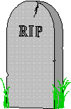

Suffolk Intergroup Association
of A.A. Bulletin July 2004
113-8 Bay Avenue Patchogue, NY 11772
(631) 654-1150 FAX (631) 654-1110
Mail: P.O. Box 659 Patchogue, NY 11772 email: WWW.SUFFOLKNY-AA.ORG
'The Bulletin" is published monthly by the Suffolk Intergroup Association of Alcoholics Anonymous, PO Box 659, Patchogue, NY 11772. "Alcoholics Anonymous" and "AA" are registered trademarks of Alcoholics Anonymous World Services, Inc. Quotes from AAWS literature are used with permission.

THINGS WE CANNOT CHANGE
Robert RipLey Smith Jr. "Smitty" (Son of Dr. Bob)
died April 22, 2004
in Memphis Tenn.,
of congestive heart
failure. He was 85.
IN MEMORIUM
The 'Big Meeting' Celebrates the First Meeting of A.A.'s Founders 69 Years Ago
In Akron, Ohio, on June 10, 1935, two alcoholics, one a New York broker and the other an Ohio physician, founded Alcoholics Anonymous (A.A.), when Dr. Bob took his last drink on that day. A.A. is a 12-step program of recovery that has helped countless people with the disease of alcoholism. Members of this anonymous organization use meetings, the steps. sponsorship, and reliance on a "higher power" to remain sober. The only requirement for membership is a desire to stop drinking. Today there are more than 80,000 local groups in the U.S. with an estimated membership of almost two million people.
In 1998, Bob Smith Jr. ("Smitty"), told the Akron Beacon Journal that he and his sister were eyewitnesses to history as they saw A.A. unfold in their Akron home. "I loved it," he said. "The first 17 years of my life I lived with active alcoholism; now there was recovery." The son of Dr. Bob was there on Mother's Day in 1935 when his father and Bill Wilson co-founded what would become A.A. He and his late sister Sue wrote a book of their memories called
Children of the Healer: The Story of Dr. Bob's Kids.
Back
Next